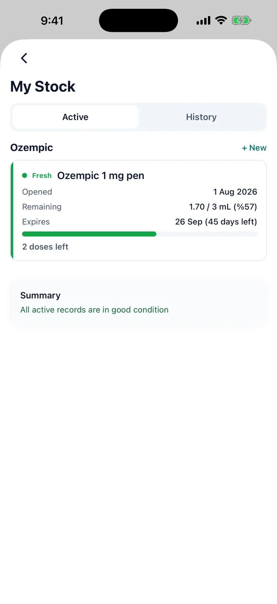
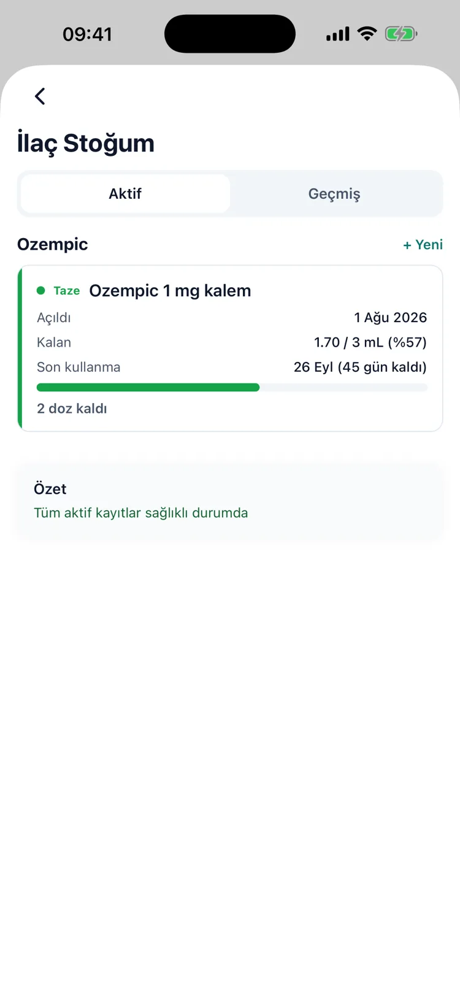

Know when the vial runs out before it does
Flakon bitmeden bittiğini bil
The problem
A vial ends in two ways: it empties, or it expires. Both are predictable weeks ahead and both are usually noticed the evening a dose is due.
Sorun
Flakon iki türlü biter: ya tükenir ya son kullanma tarihi geçer. İkisi de haftalar öncesinden bellidir ve ikisi de genellikle dozun geldiği akşam fark edilir.
What Dozify does
What is left, in doses
Remaining millilitres and what that means in injections at your prescribed amount.
Two clocks, not one
Days since opening and the manufacturer's expiry, whichever comes first — with the storage rules for that medication.
Time out of the fridge
Log a storage event when a vial spends the afternoon in a bag. Travel mode is for the days that are not ordinary.
Dozify ne yapıyor
Kalan miktar, doz cinsinden
Kalan mililitre ve bunun senin reçete edilen dozunla kaç enjeksiyon ettiği.
Tek değil, iki saat
Açılıştan bu yana geçen gün ve üreticinin son kullanma tarihi — hangisi önce geliyorsa, o ilacın saklama kurallarıyla birlikte.
Buzdolabı dışında geçen süre
Flakon öğleden sonrayı çantada geçirdiyse saklama olayı kaydet. Seyahat modu, sıradan olmayan günler için.


Who this helps
People on multi-dose pens and vials, where one container covers several weeks and the end of it arrives quietly. It matters most to anyone who travels with their medication, or who has stood in front of an open fridge on a Sunday wondering whether what is in there is still good.
Kimin işine yarar
Bir kabın birkaç haftayı karşıladığı ve bitişin sessizce geldiği çok dozlu kalem ve flakon kullananlar. En çok da ilacıyla seyahat edenler ya da bir pazar günü açık buzdolabının önünde durup içindekinin hâlâ iyi olup olmadığını düşünenler için.
Where it stops
Dozify counts what you tell it: doses drawn, the day you opened the vial and the expiry printed on it. It cannot see the liquid, so it cannot tell you whether a particular vial is still fit to use — that judgement belongs to the storage instructions for your medication and, when there is any doubt, to your pharmacist. The in-use limits it shows come from those instructions, not from us.
Nerede duruyor
Dozify kendisine söylediklerinizi sayar: çekilen dozlar, flakonu açtığınız gün ve üstünde yazan son kullanma tarihi. Sıvıyı göremez; dolayısıyla belirli bir flakonun hâlâ kullanılabilir olup olmadığını söyleyemez — bu karar ilacınızın saklama talimatlarına ve şüphe varsa eczacınıza aittir. Gösterdiği kullanım süreleri o talimatlardan gelir, bizden değil.
Private by default
Your health records stay on your device and are never uploaded. There is no account and no cloud sync. Usage statistics never carry a medication name or a symptom — details in the privacy policy.
Varsayılan olarak gizli
Sağlık kayıtların cihazında kalır ve hiçbir yere yüklenmez. Hesap yok, bulut senkronu yok. Kullanım istatistikleri hiçbir zaman ilaç adı veya belirti taşımaz — ayrıntılar gizlilik politikasında.
Download on the App Store App Store'dan indir
Questions
Sorular
Does it count doses automatically?
Dozları otomatik sayıyor mu?
It subtracts each injection you log from the vial you logged it against, so the remaining amount follows your own entries without a separate step.
Kaydettiğiniz her enjeksiyonu, hangi flakona kaydettiyseniz ondan düşer; kalan miktar ayrı bir adım gerekmeden kendi kayıtlarınızı takip eder.
Where does the in-use limit come from?
Kullanım süresi nereden geliyor?
From the storage instructions for that medication — how long it may be kept once opened, and at what temperature. Dozify shows the one that applies and counts the days; it does not invent a number.
O ilacın saklama talimatlarından — açıldıktan sonra ne kadar tutulabileceği ve hangi sıcaklıkta. Dozify geçerli olanı gösterir ve günleri sayar; bir sayı uydurmaz.
What if the pen spends a day out of the fridge?
Kalem bir gün buzdolabı dışında kalırsa?
Log it as a storage event, with how long and roughly how warm. It stays on the vial's record so it is there when you decide, or when you ask a pharmacist.
Ne kadar süre ve kabaca ne sıcaklıkta olduğuyla birlikte bir saklama olayı olarak kaydedin. Flakonun kaydında durur; karar verirken ya da eczacıya sorarken elinizde olur.
Will it warn me before a vial runs out?
Flakon bitmeden önce uyarır mı?
It shows doses remaining and days remaining on the card, so the end is visible weeks ahead rather than the evening a dose is due.
Kartta kalan dozu ve kalan günü gösterir; bitiş, dozun geldiği akşam değil haftalar öncesinden görünür olur.
Does this work for pens as well as vials?
Flakon gibi kalemler için de çalışır mı?
Yes. A pen with several doses in it is tracked the same way: what is left, how long it has been open, and when it expires.
Evet. İçinde birkaç doz olan bir kalem de aynı şekilde takip edilir: ne kaldı, ne zamandır açık ve ne zaman doluyor.
Read next
Guides, with their sources named: how to inject a pen, step by step, where to inject and how to rotate and what GLP-1 actually is.
Elsewhere in Dozify: the shot tracker and the doctor report.
Sonra şunlar
Kaynağı yazılı rehberler: kalemin adım adım nasıl yapıldığı, nereye yapılır, rotasyon nasıl olur ve GLP-1'in aslında ne olduğu.
Dozify'ın diğer yanları: iğne takibi ve doktor raporu.